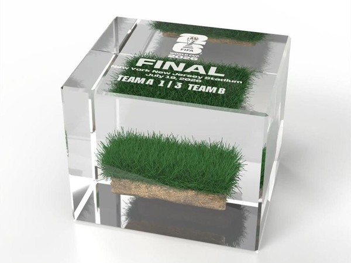
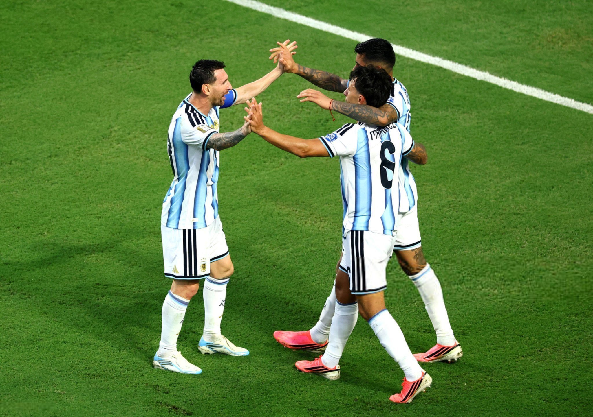
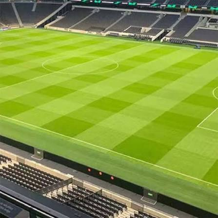

🔥 Trending News 🔥
FIFA Menjual 🧐
Potongan Rumput Lapangan Pildun?
FIFA Resmi Menjual Potongan Rumput Asli dari Lapangan Pertandingan Final Piala Dunia 2026 di MetLife Stadium, New Jersey, Amerika Serikat melalui koleksi resmi bernama "Piece of the Pitch".

Bukan Rumput Biasa ⚽
Rumput yang digunakan adalah varietas Tahoma 31 Bermudagrass yang direkayasa secara khusus.
Distribusi Lapangan


